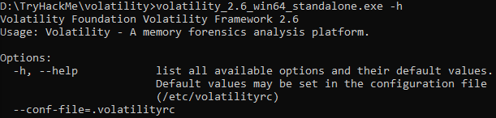

TryHackMe - Volatility
Creator: DarkStar7471 and cmnatic
url: https://tryhackme.com/room/bpvolatility
Setup :- Windows 10
- Versi Volatility 2.6
Room ini akan mengenalkan tool yang digunakan di dunia forensik dalam menganalisa data yang di peroleh dari RAM, yaitu dengan Volatility. Sebelum mengerjakan di sarankan untuk membuat folder baru khusus untuk room ini, karena akan banyak melakukan penyimpanan data hasil.
Task 1 - Intro
Pertama, install Volatility dengan download dari
webiste Volatility dan
langsung di extract. Buka cmd dimana volatility tadi di extract.
Untuk setup volatility dapat dilakukan dengan mengetikkan command
volatility_2.6_win64_standalone.exe -h di terminal.
Jika berhasil, maka terminal akan mengeluarkan output berupa options
yang bisa digunakan dengan volatility, tanda volatility siap digunakan.

Sesuaikan angka 2.6 volatility_2.6_win64_standalone.exe
dengan versi volatility yang kalian punya.
Task 2 - Obtaining Memory Sample
Semua jawaban ada di bacaan yang di sediakan
Task 3 - Examining Our Patient
Klik Download task files, taruh di tempat yang mudah di arahkan di terminal, misal
dimana volatility di ekstrak.
-
First, let's figure out what profile we need to use. Profiles determine how Volatility treats our memory image since every version of Windows is a little bit different. Let's see our options now with the command
volatility -f MEMORY_FILE.raw imageinfoKetik
volatility_2.6_win64_standalone.exe -f cridex.vmem imageinfo. Jika berhasil, anda akan mendapat infromasi berupa profil yang di tandai denganSuggested Profile(s) -
Do this now with the command
volatility -f MEMORY_FILE.raw --profile=PROFILE pslist. What profile is correct for this memory image?Jawaban dari nomor 1
-
Take a look through the processes within our image. What is the process ID for the smss.exe process? If results are scrolling off-screen, try piping your output into less
Jawaban dari nomor 2
-
In addition to viewing active processes, we can also view active network connections at the time of image creation! Let's do this now with the command
volatility -f MEMORY_FILE.raw --profile=PROFILE netscan. Unfortunately, something not great is going to happen here due to the sheer age of the target operating system as the command netscan doesn't support it.Jika command di jalankan, akan keluar
ERROR : volatility.debug : This command does not support the profile WinXPSP2x86 -
It's fairly common for malware to attempt to hide itself and the process associated with it. That being said, we can view intentionally hidden processes via the command
psxview. What process has only one 'False' listed?Gunakan command yang sebelumnya dan ganti bagian akhir jadi
volatility_2.6_win64_standalone.exe -f cridex.vmem --profile=PROFILE_DARI_NOMOR_2 psxview. -
In addition to viewing hidden processes via psxview, we can also check this with a greater focus v ia the command
ldrmodules. Three columns will appear here in the middle, InLoad, InInit, InMem. If any of these are false, that module has likely been injected which is a really bad thing. On a normal system the grep statement above should return no output. Which process has all three columns listed as 'False' (other than System)?Sama seperti nomor 5, gunakan command yang sebelumnya dan ganti bagian belakang menjadi
volatility_2.6_win64_standalone.exe -f cridex.vmem --profile=PROFILE_DARI_NOMOR_2 ldrmodules. -
Processes aren't the only area we're concerned with when we're examining a machine. Using the apihooks command we can view unexpected patches in the standard system DLLs. If we see an instance where Hooking module:
Tidak perlu di jawab, tapi jika anda mencoba menjalankan dengan tag
apihooksdan stuck pencetctrl+cuntuk membatalkan program -
Injected code can be a huge issue and is highly indicative of very very bad things. We can check for this with the command malfind. Using the full command
volatility -f MEMORY_FILE.raw --profile=PROFILE malfind -D <Destination Directory>we can not only find this code, but also dump it to our specified directory. Let's do this now! We'll use this dump later for more analysis. How many files does this generate?Command ini akan mengekstrak data dari
cridex.vmemdan akan dump data tersebut untuk di simpan. Buat folder baru untuk menyimpan hasil. Gunakan commandvolatility_2.6_win64_standalone.exe -f cridex.vmem --profile=PROFILE_DARI_NOMOR_2 malfind -D LOKASI_FOLDER_BARU -
Last but certainly not least we can view all of the DLLs loaded into memory. DLLs are shared system libraries utilized in system processes. These are commonly subjected to hijacking and other side-loading attacks, making them a key target for forensics. Let's list all of the DLLs in memory now with the command
dlllistvolatility_2.6_win64_standalone.exe -f cridex.vmem --profile=PROFILE_DARI NOMOR 2 dllist -
Now that we've seen all of the DLLs running in memory, let's go a step further and pull them out! Do this now with the command
volatility -f MEMORY_FILE.raw --profile=PROFILE --pid=PID dlldump -D <Destination Directory>where the PID is the process ID of the infected process we identified earlier (questions five and six). How many DLLs does this end up pulling?Untuk menemukan PID yang di inginkan pertanyaan, scroll up dari hasil yang sebelumnya dari nomor 5 dan 6. Ada 1 PID yang sama dari hasil 2 nomor tersebut. Untuk flag
-Ddi sarankan untuk membuat folder baru lagi.
Task 4 - Post Actions
- Upload the extracted files to VirusTotal for examination.
- Upload the extracted files to Hybrid Analysis for examination - Note, this will also upload to VirusTotal but for the sake of demonstration we have done this separately.
- What malware has our sample been infected with? You can find this in the results of VirusTotal and Hybrid Anaylsis.
Untuk task 4 ini, ada kendala yang di temukan. Data yang di upload ke VirusTotal dan Hybrid Analysis adalah hasil ekstarsi dari nomor 10 task 3. Namun jika di upload baik pada VirusTotal atau Hybrid Analysis, hasil tidak di dapatkan. Setelah melakukan simple googling, di dapat hasil dan juga penjelasannya dari hex-men
Task 5 - Extra Credits
Feedback
Ada kiranya bisa memberi tahu saya jika ada kesalahan atau ada penjelasan yang salah.
Saya bukan ahli dalam bidang hacking ataupun digital forensics, blog ini saya buat sebagai panduan/catatan pribadi, dimana harapannya ini juga bisa membantu anda juga.
- Kirim koreksinya ke twitter saya
- atau bisa di email ke sini
Cukup sekian, terima kasih.
Uploaded: 06/09/2021
Last Update: -